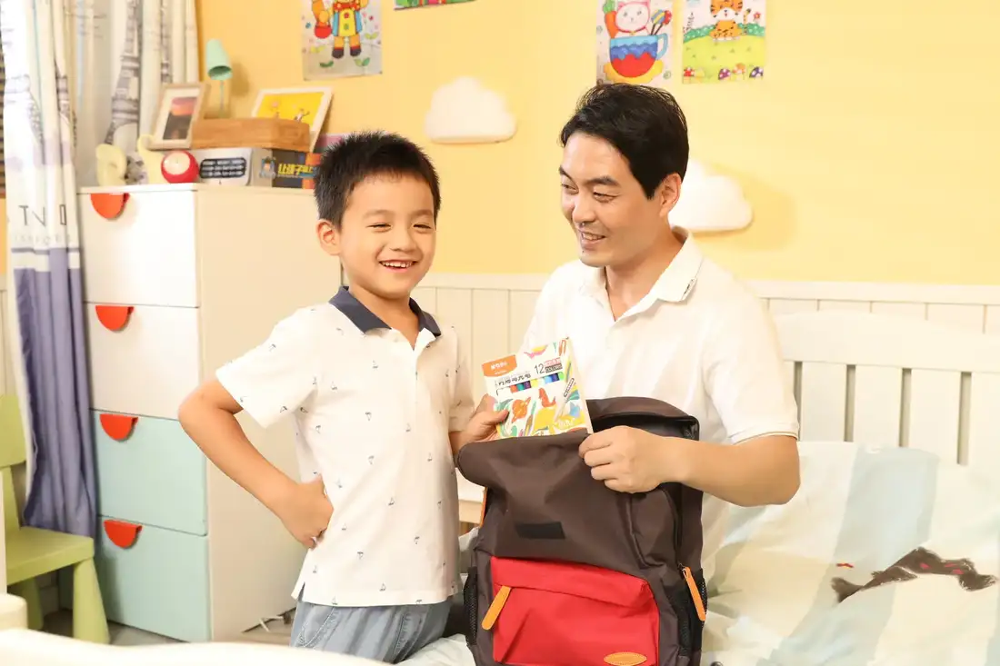
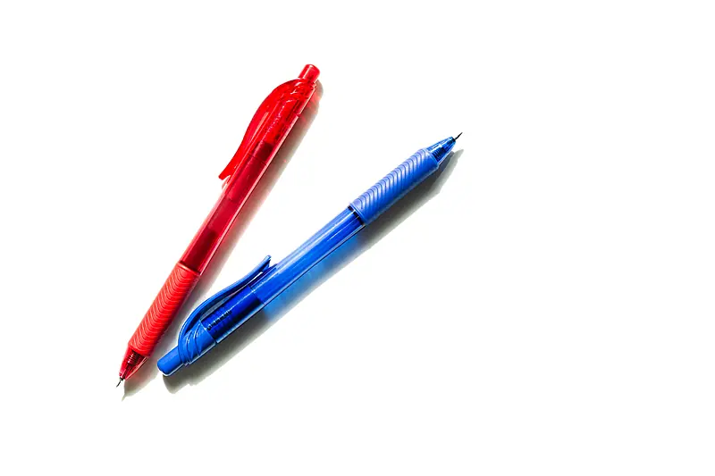
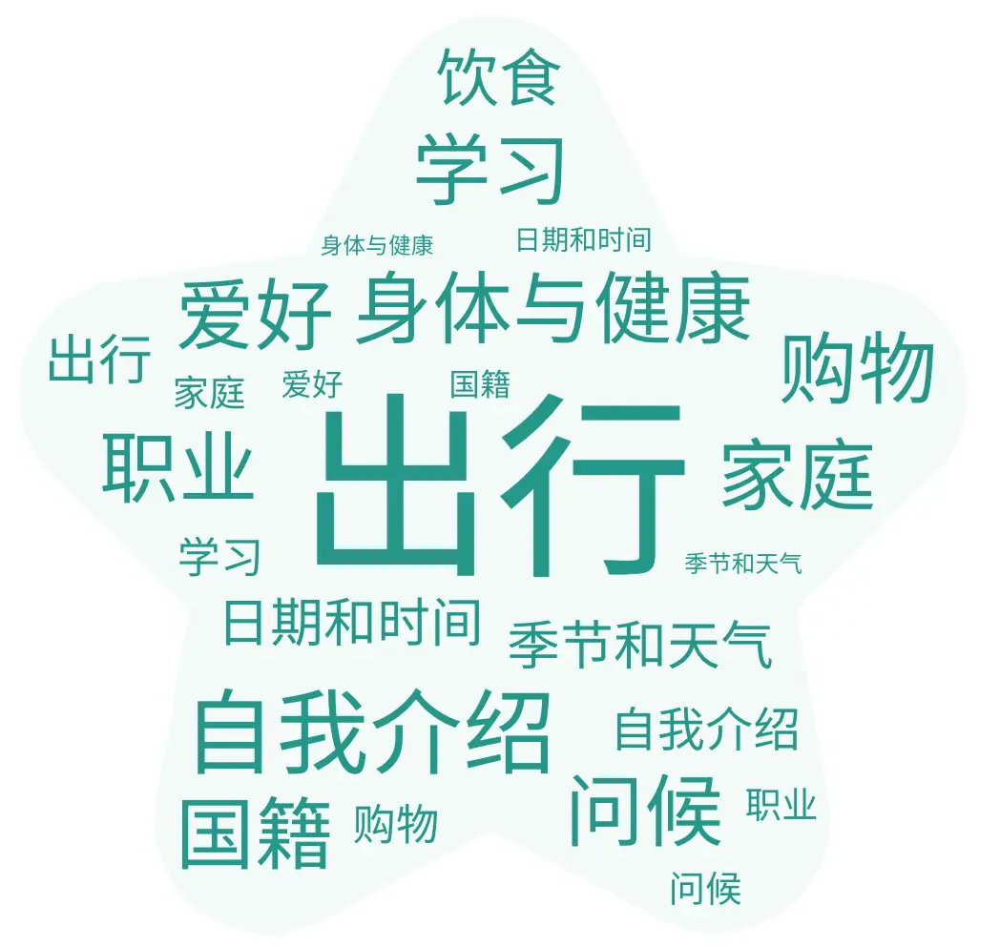
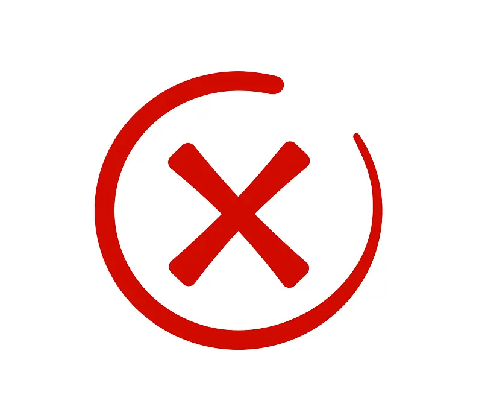
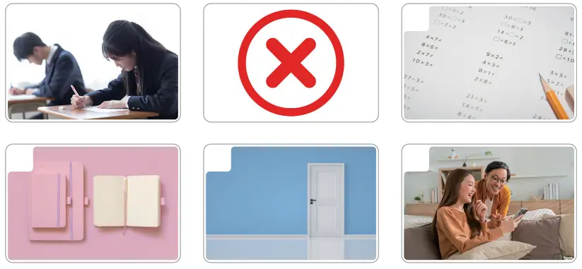

Giáo trình HSK 2 · Lesson 10就要考试了
Jiù yào kǎoshì le
Sắp thi rồi

Mục tiêu bài khóa
Sau bài học, người học có thể đặt câu hỏi lựa chọn, dùng cụm chủ vị làm vị ngữ và diễn đạt một sự việc sắp xảy ra.
选择问句Đặt câu hỏi lựa chọn với 还是 để người nghe chọn một trong các khả năng.
主谓谓语句Sử dụng câu có cụm chủ vị làm vị ngữ để nhận xét về người hoặc sự việc.
“要／快／快要／就要……了”Diễn đạt một hành động hoặc trạng thái sắp xảy ra.
Khởi động · 热身
Chọn từ rồi chọn đúng hình ảnh tương ứng.
💡 Hãy chọn một từ trước.
Từ vựng · 生词
Mặt trước có từ, nghĩa, loại từ và nút phát/dừng. Mặt sau có hình ảnh và ví dụ theo PowerPoint.
开学
kāixué
khai giảng; bắt đầu học kỳ
động từChạm vùng trống để lật thẻ
我明天开学。 🔊Wǒ míngtiān kāixué.
Ngày mai tôi bắt đầu học. 开学时间是九月一日。 🔊Kāixué shíjiān shì jiǔ yuè yī rì.
Ngày khai giảng là ngày 1 tháng 9. 门
mén
cửa
danh từChạm vùng trống để lật thẻ

让我来开门吧！ 🔊Ràng wǒ lái kāimén ba!
Để tôi mở cửa nhé! 他已经出门了。 🔊Tā yǐjīng chūmén le.
Anh ấy đã ra khỏi nhà rồi. 后面
hòumiàn
phía sau; đằng sau
danh từ chỉ phương vịChạm vùng trống để lật thẻ

上课的时候，他坐在我后面。 🔊Shàngkè de shíhou, tā zuò zài wǒ hòumiàn.
Khi học, anh ấy ngồi phía sau tôi. 我家后面有一家超市。 🔊Wǒ jiā hòumiàn yǒu yì jiā chāoshì.
Phía sau nhà tôi có một siêu thị. 帮
bāng
giúp; giúp đỡ
động từChạm vùng trống để lật thẻ
你能帮我拿一下书包吗？ 🔊Nǐ néng bāng wǒ ná yíxià shūbāo ma?
Bạn có thể cầm giúp tôi chiếc cặp một lát không? 爸爸帮弟弟准备书包。 🔊Bàba bāng dìdi zhǔnbèi shūbāo.
Bố giúp em trai chuẩn bị cặp sách. 笔
bǐ
bút; cây bút
danh từChạm vùng trống để lật thẻ

桌子下面有支笔。 🔊Zhuōzi xiàmiàn yǒu yì zhī bǐ.
Dưới bàn có một cây bút. 他送给我一支笔。 🔊Tā sòng gěi wǒ yì zhī bǐ.
Anh ấy tặng tôi một cây bút. 考试
kǎoshì
thi; kiểm tra; kỳ thi
động từ / danh từChạm vùng trống để lật thẻ
星期一要考试。 🔊Xīngqīyī yào kǎoshì.
Thứ Hai sẽ có bài kiểm tra. 同学们正在考试。 🔊Tóngxuémen zhèngzài kǎoshì.
Các bạn học sinh đang làm bài kiểm tra. 词
cí
từ; từ ngữ
danh từChạm vùng trống để lật thẻ

我今天学了十个词。 🔊Wǒ jīntiān xué le shí ge cí.
Hôm nay tôi đã học mười từ. 请你读这个词。 🔊Qǐng nǐ dú zhège cí.
Mời bạn đọc từ này. 本子
běnzi
vở; tập; cuốn vở
danh từChạm vùng trống để lật thẻ
我有一个本子。 🔊Wǒ yǒu yí ge běnzi.
Tôi có một quyển vở. 这是我的本子。 🔊Zhè shì wǒ de běnzi.
Đây là quyển vở của tôi. 错
cuò
sai; nhầm; lỗi
tính từ / động từChạm vùng trống để lật thẻ

这个字写错了，你再看看书。 🔊Zhège zì xiě cuò le, nǐ zài kànkan shū.
Chữ này viết sai rồi, bạn xem lại sách nhé. 对不起，我认错人了。 🔊Duìbuqǐ, wǒ rèn cuò rén le.
Xin lỗi, tôi nhận nhầm người rồi. 题
tí
đề; câu hỏi; bài tập
danh từChạm vùng trống để lật thẻ
这道题我做错了。 🔊Zhè dào tí wǒ zuò cuò le.
Bài này tôi làm sai rồi. 第五题太难了，我不知道怎么做。 🔊Dì wǔ tí tài nán le, wǒ bù zhīdào zěnme zuò.
Câu số năm khó quá, tôi không biết làm thế nào. 还是
háishi
hay là; hoặc
liên từChạm vùng trống để lật thẻ

你喝茶还是咖啡？ 🔊Nǐ hē chá háishi kāfēi?
Bạn uống trà hay cà phê? 今天去还是明天去？ 🔊Jīntiān qù háishi míngtiān qù?
Hôm nay đi hay ngày mai đi? 考
kǎo
thi; thi cử
động từChạm vùng trống để lật thẻ
今天我们考中文。 🔊Jīntiān wǒmen kǎo Zhōngwén.
Hôm nay chúng tôi thi tiếng Trung. 他考得很好。 🔊Tā kǎo de hěn hǎo.
Anh ấy thi rất tốt. 快要
kuàiyào
sắp; gần đến lúc
phó từChạm vùng trống để lật thẻ
我快要放假了。 🔊Wǒ kuàiyào fàngjià le.
Tôi sắp được nghỉ rồi. 电影快要开始了。 🔊Diànyǐng kuàiyào kāishǐ le.
Bộ phim sắp bắt đầu rồi. 笑
xiào
cười
động từChạm vùng trống để lật thẻ
我是一个爱笑的男生。 🔊Wǒ shì yí ge ài xiào de nánshēng.
Tôi là một chàng trai hay cười. 他笑了笑，没说什么就走了。 🔊Tā xiào le xiào, méi shuō shénme jiù zǒu le.
Anh ấy mỉm cười, không nói gì rồi đi. Bài khóa · 课文
Ảnh ngữ cảnh bên trái, hội thoại bên phải. Bài khóa 4 trình bày đúng dạng đoạn nhật ký.
Tương tác đóng vai
Chọn bài khóa và nhân vật. Lời của vai đã chọn sẽ được ẩn; phần này chỉ hiển thị chữ Hán.
Củng cố từ vựng
Lật đáp án từ vựng rồi hoàn thành câu hỏi đọc hiểu.
Câu hỏi đọc hiểu
Mẫu câu cần nhớ: 楼下站着一个人。她经常跑上来找我玩。就要考试了！